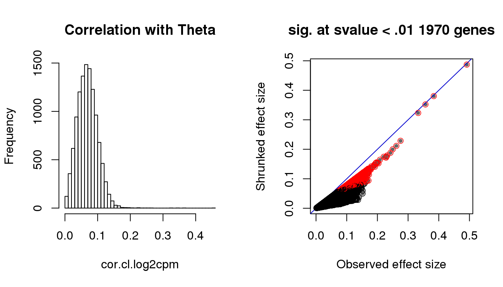

Last updated: 2018-03-13
Code version: 4ba15d8
Estimate positions based on PCA
Correlation positions with genes and DAPI
Packages
library(circular)
library(conicfit)
library(Biobase)
library(dplyr)
library(matrixStats)
library(CorShrink)Load data
df <- readRDS(file="../data/eset-filtered.rds")
pdata <- pData(df)
fdata <- fData(df)
# select endogeneous genes
counts <- exprs(df)[grep("ENSG", rownames(df)), ]
log2cpm <- readRDS("../output/seqdata-batch-correction.Rmd/log2cpm.rds")
# log2cpm.adjust <- readRDS("../output/seqdata-batch-correction.Rmd/log2cpm.adjust.rds")
# import corrected intensities
pdata.adj <- readRDS("../output/images-normalize-anova.Rmd/pdata.adj.rds")
macosko <- readRDS("../data/cellcycle-genes-previous-studies/rds/macosko-2015.rds")pc.fucci <- prcomp(subset(pdata.adj,
select=c("rfp.median.log10sum.adjust",
"gfp.median.log10sum.adjust")),
center = T, scale. = T)The first two PC are about the sample in explaining variation.
pc.fucci$sdev[1:2][1] 1.0065119 0.9934455Green and red are similarly correlated with PC1 and PC2 across individuals.
pcs.rfp <- sapply(1:2, function(i) {
res <- summary(lm(pc.fucci$x[,i]~pdata.adj$rfp.median.log10sum.adjust))
res$adj.r.squared
})
pcs.rfp[1] 0.5060336 0.4929543pcs.gfp <- sapply(1:2, function(i) {
res <- summary(lm(pc.fucci$x[,i]~pdata.adj$gfp.median.log10sum.adjust))
res$adj.r.squared
})
pcs.gfp[1] 0.5060336 0.4929543library(circular)
Theta.fucci <- coord2rad(pc.fucci$x)
par(mfrow=c(2,2), mar=c(4,4,3,1))
plot(circular(Theta.fucci), stack = TRUE)
plot(as.numeric(Theta.fucci), pdata.adj$rfp.median.log10sum.adjust,
col = "firebrick", pch = 16, cex = .7,
xlab = "Theta (projected cell time)",
ylab = "RFP (log10 intensity)")
plot(as.numeric(Theta.fucci), pdata.adj$gfp.median.log10sum.adjust,
col = "forestgreen", pch = 16, cex = .7,
xlab = "Theta (projected cell time)",
ylab = "GFP (log10 intensity)")
plot(as.numeric(Theta.fucci), pdata.adj$gfp.median.log10sum.adjust,
col = "mediumblue", pch = 16, cex = .7,
xlab = "Theta (projected cell time)",
ylab = "DAPI (log10 intensity)")Correlation with DAPI, RFP and GFP.
library(Rfast)
library(circular)
# normalize intensities to between 0 to 2*pi
pdata.adj$dapi.circ <- with(pdata.adj, {
normed <- (dapi.median.log10sum.adjust-min(dapi.median.log10sum.adjust))/(max(dapi.median.log10sum.adjust)- min(dapi.median.log10sum.adjust))
normed*2*pi
} )
pdata.adj$gfp.circ <- with(pdata.adj, {
normed <- (gfp.median.log10sum-min(gfp.median.log10sum.adjust))/(max(gfp.median.log10sum.adjust)- min(gfp.median.log10sum.adjust))
normed*2*pi
} )
pdata.adj$rfp.circ <- with(pdata.adj, {
normed <- (rfp.median.log10sum.adjust-min(rfp.median.log10sum.adjust))/(max(rfp.median.log10sum.adjust)- min(rfp.median.log10sum.adjust))
normed*2*pi
} )
cor.dapi.cl <- sqrt(circlin.cor(as.numeric(Theta.fucci), pdata.adj$dapi.median.log10sum.adjust)[1])
cor.gfp.cl <- sqrt(circlin.cor(as.numeric(Theta.fucci), pdata.adj$gfp.median.log10sum.adjust)[1])
cor.rfp.cl <- sqrt(circlin.cor(as.numeric(Theta.fucci), pdata.adj$rfp.median.log10sum.adjust)[1])
cor.dapi.cc <- cor.circular(as.numeric(Theta.fucci), pdata.adj$dapi.median.log10sum.adjust)
cor.gfp.cc <- cor.circular(as.numeric(Theta.fucci), pdata.adj$gfp.median.log10sum.adjust)
cor.rfp.cc <- cor.circular(as.numeric(Theta.fucci), pdata.adj$rfp.median.log10sum.adjust)
out <- data.frame(cbind(rbind(cor.dapi.cl, cor.gfp.cl, cor.rfp.cl),
rbind(cor.dapi.cc, cor.gfp.cc, cor.rfp.cc)),
row.names = c("DAPI", "GFP", "RFP"))
colnames(out) <- c("cor.circ.linear", "cor.circ.circ")
print(out) cor.circ.linear cor.circ.circ
DAPI 0.5313878 -0.4176550
GFP 0.8787765 -0.4959238
RFP 0.9333337 0.8057986The high correlation of GFP and RFP in the first column follows the use of PCs of GFP and RFP to construct cell time. Results in the second column seem interesting. The values capture the relationship between these measures in the plot. GFP and DAPI are negatively associated with cell time and RFP is positive associated with cell time.
Correlation with DAPI, RFP and GFP.
library(Rfast)
library(circular)
# normalize intensities to between 0 to 2*pi
pdata.adj$dapi.circ <- with(pdata.adj, {
normed <- (dapi.median.log10sum.adjust-min(dapi.median.log10sum.adjust))/(max(dapi.median.log10sum.adjust)- min(dapi.median.log10sum.adjust))
normed*2*pi
} )
pdata.adj$gfp.circ <- with(pdata.adj, {
normed <- (gfp.median.log10sum-min(gfp.median.log10sum.adjust))/(max(gfp.median.log10sum.adjust)- min(gfp.median.log10sum.adjust))
normed*2*pi
} )
pdata.adj$rfp.circ <- with(pdata.adj, {
normed <- (rfp.median.log10sum.adjust-min(rfp.median.log10sum.adjust))/(max(rfp.median.log10sum.adjust)- min(rfp.median.log10sum.adjust))
normed*2*pi
} )
cor.dapi.cl <- sqrt(circlin.cor(as.numeric(Theta.fucci), pdata.adj$dapi.median.log10sum.adjust)[1])
cor.gfp.cl <- sqrt(circlin.cor(as.numeric(Theta.fucci), pdata.adj$gfp.median.log10sum.adjust)[1])
cor.rfp.cl <- sqrt(circlin.cor(as.numeric(Theta.fucci), pdata.adj$rfp.median.log10sum.adjust)[1])
cor.dapi.cc <- cor.circular(as.numeric(Theta.fucci), pdata.adj$dapi.median.log10sum.adjust)
cor.gfp.cc <- cor.circular(as.numeric(Theta.fucci), pdata.adj$gfp.median.log10sum.adjust)
cor.rfp.cc <- cor.circular(as.numeric(Theta.fucci), pdata.adj$rfp.median.log10sum.adjust)
out <- data.frame(cbind(rbind(cor.dapi.cl, cor.gfp.cl, cor.rfp.cl),
rbind(cor.dapi.cc, cor.gfp.cc, cor.rfp.cc)),
row.names = c("DAPI", "GFP", "RFP"))
colnames(out) <- c("cor.circ.linear", "cor.circ.circ")
print(out) cor.circ.linear cor.circ.circ
DAPI 0.5313878 -0.4176550
GFP 0.8787765 -0.4959238
RFP 0.9333337 0.8057986library(Rfast)
library(circular)
counts.log2cpm <- log10((10^6)*t(t(counts)/colSums(counts))+1)
counts.log2cpm.normed <- 2*pi*(counts.log2cpm)/max(counts.log2cpm)
cor.cc.log2cpm <- sapply(1:nrow(counts.log2cpm), function(g) {
cor.circular(counts.log2cpm.normed[g,],Theta.fucci)
})
nsam.nonzero <- rowSums(counts.log2cpm > 0)
library(CorShrink)
corshrink.nonzero.cc.log2cpm <- CorShrinkVector(cor.cc.log2cpm,
nsamp_vec = nsam.nonzero, report_model=TRUE)
sval.cc <- corshrink.nonzero.cc.log2cpm$model$result$svalue
par(mfrow=c(1,2))
hist(cor.cc.log2cpm, nclass=50,
main = "Correlation with Theta")
with(corshrink.nonzero.cc.log2cpm$model$result, {
plot(betahat,PosteriorMean, pch = 16, col = "gray40", cex=.7,
xlab = "Observed effect size", ylab = "Shrunked effect size");
abline(0,1, col = "mediumblue");
points(betahat,PosteriorMean, col = as.numeric(sval.cc<.01)+1, lwd=.8)
title(paste("sig. at svalue < .01", sum(sval.cc<.01), "genes"))
})Check cell cycle enrichment with s-value < .01.
genes.sig.cc <- (rownames(counts.log2cpm.normed)[sval.cc < .01])[order(cor.cc.log2cpm[which(sval.cc < .01)], decreasing = F)]
sig.cycle.cc <- mean(genes.sig.cc %in% macosko$ensembl)
nonsig.cycle.cc <- mean(setdiff(rownames(counts.log2cpm.normed), genes.sig.cc) %in% macosko$ensembl)
sig.cycle.cc/nonsig.cycle.cc [1] 10.28224rho.sig.cc <- (cor.cc.log2cpm[sval.cc < .01])[order(cor.cc.log2cpm[which(sval.cc < .01)], decreasing = F)]
genes.sig.cycle.cc <- genes.sig.cc[genes.sig.cc %in% macosko$ensembl]
rho.sig.cycle.cc <- rho.sig.cc[genes.sig.cc %in% macosko$ensembl]
gene.names.sig.cycle.cc <- sapply(1:length(genes.sig.cycle.cc), function(g) {
nm <- with(macosko, hgnc[ensembl == genes.sig.cycle.cc[g]])
return(nm[1])})Check cell cycle enrichment in top 200 genes.
genes.sig.cc <- (rownames(counts.log2cpm.normed)[order(sval.cc) < 201])[order(cor.cc.log2cpm[which(order(sval.cc) < 201)], decreasing = F)]
sig.cycle.cc <- mean(genes.sig.cc %in% macosko$ensembl)
nonsig.cycle.cc <- mean(setdiff(rownames(counts.log2cpm.normed), genes.sig.cc) %in% macosko$ensembl)
sig.cycle.cc/nonsig.cycle.cc [1] 1.037587rho.sig.cc <- (cor.cc.log2cpm[order(sval.cc) < 201])[order(cor.cc.log2cpm[which(order(sval.cc) < 201)], decreasing = F)]
genes.sig.cycle.cc <- genes.sig.cc[genes.sig.cc %in% macosko$ensembl]
rho.sig.cycle.cc <- rho.sig.cc[genes.sig.cc %in% macosko$ensembl]
gene.names.sig.cycle.cc <- sapply(1:length(genes.sig.cycle.cc), function(g) {
nm <- with(macosko, hgnc[ensembl == genes.sig.cycle.cc[g]])
return(nm[1])})Visualize expression of significant genes.
par(mfrow=c(4,2))
for(i in 1:8) {
plot(counts.log2cpm.normed[which(rownames(counts.log2cpm) == genes.sig.cycle.cc[i]),
order(as.numeric(Theta.fucci))],
ylab = "Angle (0,2pi)", xlab = "Cells ordered by Theta",
pch = 16, cex = .7, ylim = c(0,2*pi))
title(paste(gene.names.sig.cycle.cc[i], "; corr = ", round(rho.sig.cycle.cc[i],digits=2)))
points(as.numeric(Theta.fucci)[order(Theta.fucci)], col = "gray40", cex=.5, pch=16)
}
title("Expression pattern by Theta", outer=T, line=-1)# sin versus sin
par(mfrow=c(4,2))
for(i in 1:8) {
xx <- as.numeric(Theta.fucci)[order(Theta.fucci)]
yy <- counts.log2cpm.normed[which(rownames(counts.log2cpm) == genes.sig.cycle.cc[i]),order(as.numeric(Theta.fucci))]
xx <- sin(xx-mean(xx))
yy <- sin(yy-mean(yy))
plot(x=xx, y=yy,
pch = 16, cex = .7, ylim=c(-1,1),
xlab = "sin(Theta)", ylab="sin(gene angle)")
title(paste(gene.names.sig.cycle.cc[i], "; corr = ", round(rho.sig.cycle.cc[i],digits=2)))
}
title("sin(Theta) vs. sin(normalized gene expression)", outer=T, line=-1)# write.table(cbind(genes.sig.cycle, rho.sig.cycle), file = "output_tmp/genes.sig.cycle.txt", quote=F, sep = "\t", col.names=F, row.names=F)
#
# write.table(cbind(genes.sig, rho.sig), file = "output_tmp/genes.sig.txt", quote=F, sep = "\t", col.names=F, row.names=F)library(Rfast)
library(circular)
counts.log2cpm <- log10((10^6)*t(t(counts)/colSums(counts))+1)
cor.cl.log2cpm <- sapply(1:nrow(counts.log2cpm), function(g) {
sqrt(circlin.cor(counts.log2cpm[g,],Theta.fucci)[1])
})
nsam.nonzero <- rowSums(counts.log2cpm > 0)
library(CorShrink)
corshrink.nonzero.cl.log2cpm <- CorShrinkVector(cor.cl.log2cpm, nsamp_vec = nsam.nonzero, report_model=TRUE)
sval.cl <- corshrink.nonzero.cl.log2cpm$model$result$svalue
par(mfrow=c(1,2))
hist(cor.cl.log2cpm, nclass=50,
main = "Correlation with Theta")
with(corshrink.nonzero.cl.log2cpm$model$result, {
plot(betahat,PosteriorMean, pch = 16, col = "gray40", cex=.7,
xlab = "Observed effect size", ylab = "Shrunked effect size");
abline(0,1, col = "mediumblue");
points(betahat,PosteriorMean, col = as.numeric(sval.cl<.01)+1, lwd=.8)
title(paste("sig. at svalue < .01", sum(svalue<.01), "genes"))
})
Check cell cycle enrichment in genes with s-value < .01.
genes.sig.cl <- (rownames(counts.log2cpm)[sval.cl < .01])[order(cor.cl.log2cpm[which(sval.cl < .01)], decreasing = F)]
sig.cycle.cl <- mean(genes.sig.cl %in% macosko$ensembl)
nonsig.cycle.cl <- mean(setdiff(rownames(counts.log2cpm), genes.sig.cl) %in% macosko$ensembl)
sig.cycle.cl/nonsig.cycle.cl[1] 2.981338rho.sig.cl <- (cor.cl.log2cpm[sval.cl < .01])[order(cor.cl.log2cpm[which(sval.cl < .01)], decreasing = F)]
genes.sig.cycle.cl <- genes.sig.cl[genes.sig.cl %in% macosko$ensembl]
rho.sig.cycle.cl <- rho.sig.cl[genes.sig.cl %in% macosko$ensembl]
gene.names.sig.cycle.cl <- sapply(1:length(genes.sig.cycle.cl), function(g) {
nm <- with(macosko, hgnc[ensembl == genes.sig.cycle.cl[g]])
return(nm[1])})
## these 8 are also significant in circular-circular correlation
sval.cc[rownames(counts.log2cpm.normed) %in% genes.sig.cycle.cl[1:8]][1] 5.925637e-01 3.282286e-02 5.918561e-01 2.547773e-05 2.772930e-01
[6] 5.637073e-01 2.386840e-02 6.050944e-02Check cell cycle enrichment in genes with s-value in top 200.
genes.sig.cl <- (rownames(counts.log2cpm)[order(sval.cl) < 201])[order(cor.cl.log2cpm[which(order(sval.cl) < 201)], decreasing = F)]
sig.cycle.cl <- mean(genes.sig.cl %in% macosko$ensembl)
nonsig.cycle.cl <- mean(setdiff(rownames(counts.log2cpm), genes.sig.cl) %in% macosko$ensembl)
sig.cycle.cl/nonsig.cycle.cl[1] 0.5717413rho.sig.cl <- (cor.cl.log2cpm[order(sval.cl) < 201])[order(cor.cl.log2cpm[which(order(sval.cl) < 201)], decreasing = F)]
genes.sig.cycle.cl <- genes.sig.cl[genes.sig.cl %in% macosko$ensembl]
rho.sig.cycle.cl <- rho.sig.cl[genes.sig.cl %in% macosko$ensembl]
gene.names.sig.cycle.cl <- sapply(1:length(genes.sig.cycle.cl), function(g) {
nm <- with(macosko, hgnc[ensembl == genes.sig.cycle.cl[g]])
return(nm[1])})
## these 8 are also significant in circular-circular correlation
sval.cc[rownames(counts.log2cpm.normed) %in% genes.sig.cycle.cl[1:8]][1] 3.114114e-01 3.174974e-01 3.674104e-03 1.500274e-05 1.262248e-01Visualize expression of the significant genes.
par(mfrow=c(4,2))
for(i in 1:min(length(genes.sig.cycle.cl),8)) {
plot(x=as.numeric(Theta.fucci),
y=counts.log2cpm.normed[which(rownames(counts.log2cpm) == genes.sig.cycle.cl[i]),
order(as.numeric(Theta.fucci))],
ylab = "Angle (0,2pi)", xlab = "Sin(Theta)",
pch = 16, cex = .7, ylim = c(1,5))
title(paste(gene.names.sig.cycle.cl[i], "; corr = ", round(rho.sig.cycle.cl[i],digits=2)))
}
title("sinusoidal pattern by Theta?", outer=T, line=-1)
# sin versus data
par(mfrow=c(4,2))for(i in 1:min(length(genes.sig.cycle.cl),8)) {
xx <- as.numeric(Theta.fucci)[order(Theta.fucci)]
yy <- counts.log2cpm.normed[which(rownames(counts.log2cpm) == genes.sig.cycle.cl[i]),order(as.numeric(Theta.fucci))]
xx <- sin(xx-mean(xx))
yy <- yy-mean(yy)
plot(x=xx, y=yy,
pch = 16, cex = .7, ylim=c(-1,1),
xlab = "sin(Theta)", ylab="sin(gene angle)")
title(paste(gene.names.sig.cycle.cl[i], "; corr = ", round(rho.sig.cycle.cl[i],digits=2)))
}
title("Sin(Theta) vs. data", outer=TRUE, line=-1)
# cosine versus data
par(mfrow=c(4,2))for(i in 1:min(length(genes.sig.cycle.cl),8)) {
xx <- as.numeric(Theta.fucci)[order(Theta.fucci)]
yy <- counts.log2cpm.normed[which(rownames(counts.log2cpm) == genes.sig.cycle.cl[i]),order(as.numeric(Theta.fucci))]
xx <- cos(xx-mean(xx))
yy <- yy-mean(yy)
plot(x=xx, y=yy,
pch = 16, cex = .7, ylim=c(-1,1),
xlab = "cos(Theta)", ylab="sin(gene angle)")
title(paste(gene.names.sig.cycle.cl[i], "; corr = ", round(rho.sig.cycle.cl[i],digits=2)))
}
title("Cos(Theta) vs. data", outer=TRUE, line=-1)There are almost no overlap in the top 200 genes between the two methods. Going up to top 500 genes, we see 19 of the 481 genes overlap between the two methods. In other words, a variable that is significantly corrleated with sin(theta) doesn’t necessary have a high correlation in sin(variable value) with sin(theta). This also implies that all previous examples that I plotted for each correlation case is only significant for that particular category.
Results above on gene enrichment showed that when considering top 200 genes, cir-cir results are enriched two-fold with cell cycle genes (in Macosko data), while cir-linear are enriched with .5 with cell cycle genes, i.e., the top 200 have fewer cell cycle genes than the other genes. When consider s-values, cir-cir has about 11 fold of enrichment and cir-linear has about 2 fold enrichment…
# so many more when considering circular-linear correlation
# probably because it's picking up sinuisoidal patterns, hence osciallating genes
# find some examples...
table(order(sval.cc)<201, order(sval.cl)<201)
FALSE TRUE
FALSE 11033 196
TRUE 196 4table(order(sval.cc)<501, order(sval.cl)<501)
FALSE TRUE
FALSE 10450 479
TRUE 479 21plot(rank(sval.cc), rank(sval.cl))R version 3.4.1 (2017-06-30)
Platform: x86_64-redhat-linux-gnu (64-bit)
Running under: Scientific Linux 7.2 (Nitrogen)
Matrix products: default
BLAS/LAPACK: /usr/lib64/R/lib/libRblas.so
locale:
[1] LC_CTYPE=en_US.UTF-8 LC_NUMERIC=C
[3] LC_TIME=en_US.UTF-8 LC_COLLATE=en_US.UTF-8
[5] LC_MONETARY=en_US.UTF-8 LC_MESSAGES=en_US.UTF-8
[7] LC_PAPER=en_US.UTF-8 LC_NAME=C
[9] LC_ADDRESS=C LC_TELEPHONE=C
[11] LC_MEASUREMENT=en_US.UTF-8 LC_IDENTIFICATION=C
attached base packages:
[1] parallel stats graphics grDevices utils datasets methods
[8] base
other attached packages:
[1] Rfast_1.8.6 RcppZiggurat_0.1.4 Rcpp_0.12.15
[4] CorShrink_0.1.1 matrixStats_0.53.1 dplyr_0.7.4
[7] Biobase_2.38.0 BiocGenerics_0.24.0 conicfit_1.0.4
[10] geigen_2.1 pracma_2.1.4 circular_0.4-93
loaded via a namespace (and not attached):
[1] plyr_1.8.4 compiler_3.4.1 pillar_1.1.0
[4] git2r_0.21.0 bindr_0.1 iterators_1.0.9
[7] tools_3.4.1 boot_1.3-19 digest_0.6.15
[10] evaluate_0.10.1 tibble_1.4.2 lattice_0.20-35
[13] pkgconfig_2.0.1 rlang_0.2.0 foreach_1.4.4
[16] Matrix_1.2-10 yaml_2.1.16 mvtnorm_1.0-7
[19] bindrcpp_0.2 stringr_1.3.0 knitr_1.20
[22] rprojroot_1.3-2 grid_3.4.1 glue_1.2.0
[25] R6_2.2.2 rmarkdown_1.8 reshape2_1.4.3
[28] ashr_2.2-4 magrittr_1.5 MASS_7.3-47
[31] codetools_0.2-15 backports_1.1.2 htmltools_0.3.6
[34] assertthat_0.2.0 stringi_1.1.6 pscl_1.5.2
[37] doParallel_1.0.11 truncnorm_1.0-7 SQUAREM_2017.10-1This R Markdown site was created with workflowr